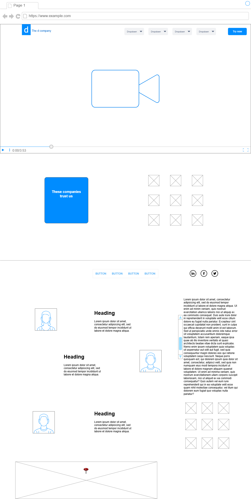

Site Name
Paola’s Language School
This name reflects the identity of the school and its focus on offering language classes in English, Spanish, and Japanese. It's a personal brand that students can trust, led by a teacher with international teaching experience.
Optional domain: paolaslanguageschool.com (availability not required for this project)
Site Purpose
The purpose of the site is to provide detailed information about language courses offered by Paola’s Language School. It will help students register for online or in-person classes, view teacher profiles, check class schedules and fees, and access content in multiple languages (English, Spanish, Japanese).
Scenarios
- How can I register for English classes in Togane or online?
- Who are the teachers and what languages do they speak?
Color Schema
- Primary Color: #0c3c78 – Used for headings and the main header/nav background.
- Accent Color: #ffd166 – Used for buttons, highlights, and section headers.
Typography
- Georgia, serif: Used for all main headings (h1, h2, etc.) for a formal, professional tone.
- Arial, sans-serif: Used for body text, navigation, and general content for readability and clarity.
Wireframes

Testing and Validation
This document and the future website will be tested for:
- HTML & CSS validation via W3C Validator
- Accessibility with contrast ratio checks and semantic elements
- Performance with image optimization and minimal external libraries
- SEO best practices such as using alt tags and meta tags